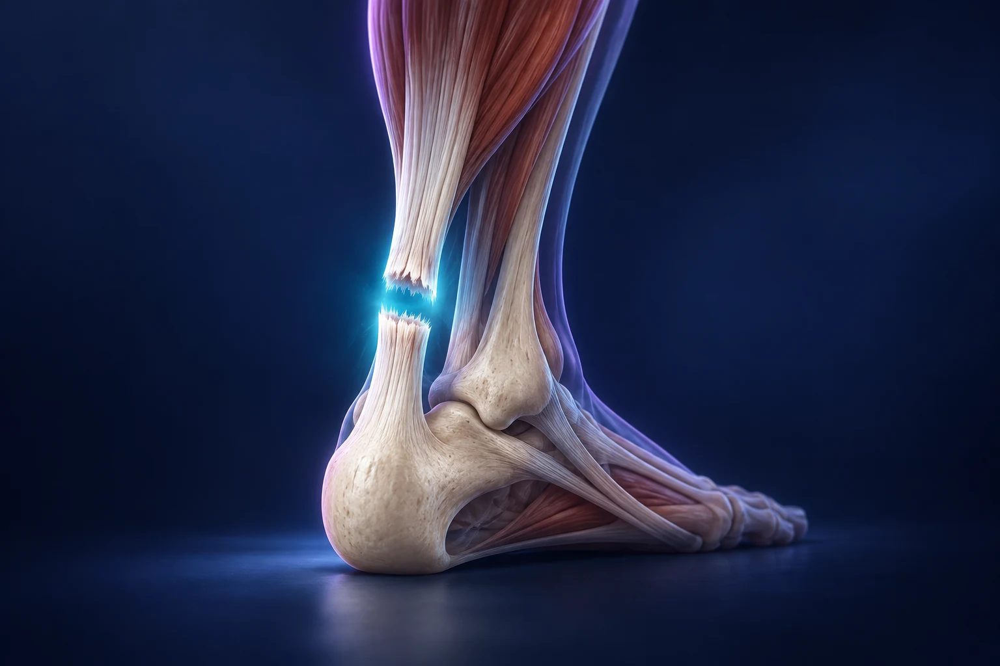

Rupture du tendon d’Achille : opération ou traitement fonctionnel ?

Une rupture du tendon d’Achille peut être traitée avec ou sans opération. Le choix repose sur la blessure, vos activités, votre état de santé et la possibilité de suivre un programme de récupération. Dans les deux cas, une protection adaptée et une rééducation organisée sont nécessaires. La décision mérite un avis rapide, sans être réduite à une règle du type « sportif égale chirurgie ».
Comment reconnaître une situation qui nécessite un avis rapide ?
Une sensation de coup derrière la cheville, un claquement ou une difficulté soudaine à pousser sur le pied peuvent évoquer une rupture. La douleur peut ensuite diminuer, ce qui ne permet pas d’écarter la lésion. Le tendon relie les muscles du mollet au talon et transmet leur force pendant la marche et l’impulsion. Cambridge University Hospitals, rupture du tendon d’Achille.
Après ce type d’épisode, interrompez l’activité et faites-vous examiner rapidement. Ne cherchez pas à tester le tendon à répétition ni à l’étirer pour « débloquer » la cheville. Pouvoir encore bouger le pied n’apporte pas, à lui seul, une réponse sur l’intégrité du tendon. Le bilan doit être réalisé par un professionnel.
Comment le diagnostic est-il établi ?
L’examen porte sur les symptômes, le tendon et la réponse du pied à certains tests cliniques. Une échographie ou d’autres images peuvent être utiles selon le contexte. Les ruptures ne sont pas toutes identiques : leur localisation, leur ancienneté et leurs caractéristiques interviennent dans la discussion. AAOS, diagnostic d’une rupture du tendon d’Achille.
Indiquez la date exacte de l’accident et ce qui s’est passé ensuite : poursuite d’une activité, protection utilisée, consultations et examens. Signalez aussi les maladies, traitements et opérations antérieures. Vous n’avez pas besoin de déterminer vous-même si la rupture est « complète » pour solliciter un avis.
En quoi consiste le traitement sans opération ?
Le traitement non chirurgical vise à permettre la cicatrisation du tendon dans des conditions protégées. Une botte ou une immobilisation maintient le pied dans une position définie ; cette position et les autorisations d’appui évoluent selon le programme. Ce traitement est actif et structuré : il ne consiste pas à attendre sans suivi. Cambridge University Hospitals, traitement et rééducation.
Le respect des réglages et des consignes compte. Ne retirez pas des talonnettes et ne modifiez pas l’appui de votre propre initiative parce que la douleur a diminué. Si la botte gêne, si la peau souffre ou si une instruction est difficile à appliquer, contactez l’équipe pour obtenir une adaptation.
Que change une opération ?
La chirurgie vise à rapprocher et réparer les extrémités du tendon, ou à reconstruire la zone lorsque la situation le nécessite. Les techniques et la taille de l’incision varient. Une réparation opératoire ne dispense pas de protéger le tendon après l’intervention et ne permet pas une reprise immédiate du sport. AAOS, traitement chirurgical du tendon d’Achille.
Les bénéfices possibles doivent être comparés aux risques de cicatrisation, d’infection, de lésion nerveuse et de nouvelle rupture. La question utile est celle du bénéfice attendu dans votre situation, en tenant compte des contraintes de chaque option. AAOS, risques et résultats des traitements.
Pourquoi la rééducation est-elle indispensable dans les deux cas ?
Le tendon cicatrise progressivement tandis que le mollet perd de la force pendant la période de protection. La rééducation accompagne le retour de la mobilité, de la force et du contrôle. Elle doit suivre le calendrier et les critères définis par l’équipe, avec une progression prudente de la mise en tension. Cambridge University Hospitals, récupération fonctionnelle.
On peut comparer le parcours à la remise en service d’un câble et de son moteur : rétablir la continuité ne suffit pas, il faut aussi retrouver la capacité de produire et de supporter l’effort. Cette image explique pourquoi la marche quotidienne et les sauts répétés ne représentent pas le même objectif de récupération.
Comment choisir un parcours compatible avec votre vie ?
Votre activité sportive compte, mais le travail et l’organisation familiale aussi. Êtes-vous souvent sur une échelle ? Devez-vous conduire ? Votre logement comporte-t-il des escaliers ? Avez-vous la possibilité d’être accompagné et de suivre la rééducation ? Ces éléments doivent être discutés avant de retenir une stratégie.
Préparez trois questions : pourquoi cette option est-elle proposée ; quelles consignes sont essentielles pendant la protection ; quels critères permettront de progresser ? Demandez aussi les conséquences d’un retard de cicatrisation ou d’une nouvelle rupture. Comprendre le parcours aide à repérer rapidement une difficulté plutôt qu’à improviser un changement de programme.
Quels signes doivent faire recontacter l’équipe ?
La protection du membre impose une surveillance. Une douleur ou un gonflement inhabituel du mollet, une gêne cutanée importante sous la botte ou une aggravation doivent être signalés. Les mesures de prévention des caillots sont déterminées selon votre situation. Une douleur thoracique ou une difficulté respiratoire soudaine justifie un appel au 15 ou au 112. Cambridge University Hospitals, surveillance après rupture.
Le Dr François Lozach à Sète peut discuter avec vous des options après examen. Si votre problème est une douleur progressive sans accident brutal, l’article sur les douleurs du tendon d’Achille traite d’une situation différente.
Ces conseils sont d’ordre général et ne remplacent pas un avis médical personnalisé.